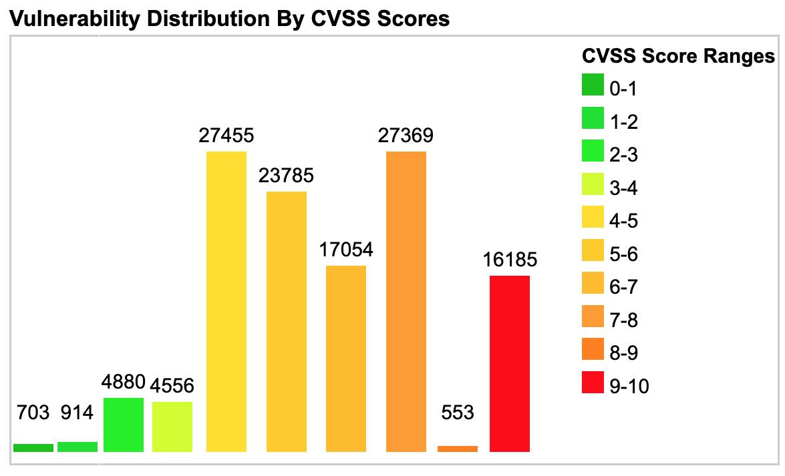
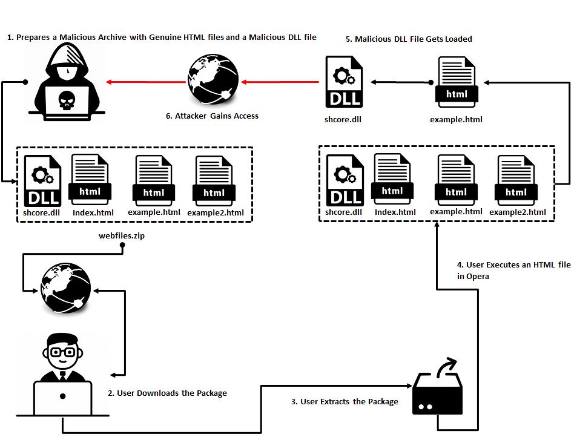

Data publicării: 02.11.2019
Autor articol: Sabin Buraga
Preliminarii
Complexitatea instrumentelor actuale de dezvoltare a aplicațiilor Web conduce și la probleme majore privitoare la securitate, existând șanse tot mai mari de a le fi exploatate vulnerabilitățile, cu impact asupra calității software în ansamblu, dar mai cu seamă asupra utilizatorilor.
Acest articolul expune cele mai importante aspecte referitoare la maniera de evaluare a vulnerabilităților framework-urilor și bibliotecilor JavaScript populare, prezentându-se Common Vulnerability Scoring System (CVSS) pe baza căruia au fost examinate Angular, React, jQuery, Vue.js și altele. A doua parte a materialului menționează cele mai frecvent apărute incidente de securitate pe anul 2019, pe baza raportului recent (octombrie 2019) al companiei Synk.
Stabilirea scorului vulnerabilităților
Evaluarea unei vulnerabilități prezente într-o aplicație – Web sau nativă – trebuie să considere impactul (tehnic, de afaceri și asupra utilizatorilor finali), plus factorii de risc. Astfel, Forumul global al răspunsului la incidente și al echipelor de securitate (FIRST – Forum of Incident Response and Security Teams) a formulat CVSS, un standard axat asupra comunicării caracteristicilor și severității vulnerabilităților software. Versiunea în vigoare a standardului este CVSS 3.1 – apărut în iunie 2019.
Aspecte de interes
Importanța vulnerabilităților observate la un sistem software este calculată via metrici care iau în considerație aspecte precum:
- Vectorul de atac – rețea (atacatorul poate fi la distanță), adiacent (atacul e limitat la un anumit nivel al stivei de protocoale), local, acces fizic;
- Complexitatea atacului;
- Necesitatea existenței unor privilegii pentru efectuarea cu succes a unui atac (e.g., controlul asupra unui sistem necesită drepturi de administrator);
- Interacțiunea cu utilizatorul;
- Aria afectată (scope) – exploatarea unei vulnerabilități poate afecta doar resursele sub administrarea unei autorități sau poate avea repercusiuni asupra mai multor aplicații aparținând unor multiple organizații;
- Confidențialitatea;
- Integritatea datelor;
- Disponibilitatea resurselor (date, servicii oferind funcționalități specifice).
Cele prezentate anterior sunt folosite pentru a obține un scor de bază (base score).
Al doilea aspect important este calculul scorului vizând atributele temporale (temporal score):
- Maturitatea codului ce exploatează o vulnerabilitate (exploit code maturity);
- Nivelul de remediere a vulnerabilității detectate – soluție oferită de producătorul aplicației (official fix), soluție temporară (temporary fix), remediere alternativă (workaround), lipsa existenței vreunei soluții;
- Încrederea în entitatea care a raportat vulnerabilitatea (report confidence).
A treia componentă a scorului o reprezintă mediul de execuție (environmental score).
Cele trei sub-scoruri sunt utilizate pentru a determina scorul CVSS 3.1 total – valori absolute în intervalul [0, 10]. Pentru detalii și un calculator online al scorului, a se vizita http://www.first.org/cvss/calculator/3.1.
Distribuția vulnerabilităților software la data de 15 noiembrie 2019 conform scorului CVSS poate fi urmărită în figura de mai jos – via CVE Vulnerability Data pe baza informațiilor furnizate de NIST (National Institute of Standards and Technology) al SUA.

De menționat faptul că metodologia CVSS nu este perfectă. Diverse probleme, critici și posibile ameliorări sunt dezbătute de (Allodi et al., 2018) și (Spring et al., 2018).
Exemplificări concrete
O serie de exemple relativ recente, toate circumscrise domeniului tehnologiilor Web:
- Cantemo Portal Stored Cross-site Scripting Vulnerability (CVE-2019-7551) – vulnerabiltate de tip XSS (Cross-site Scripting) prezentă la Cantemo, o aplicație din categoria portalurilor Web. Atacatorul – utilizator autentificat având privilegii scăzute – putea să includă, pe baza unui câmp dintr-un formular Web, programe malițioase stocate în cadrul sistemului. Aceste programe ulterior puteau fi executate direct în cadrul browser-elor Web ale victimelor ce deschideau paginile incluzând acel câmp vulnerabil. Amănunte privind acest atac sunt disponibile la http://nvd.nist.gov/vuln/detail/CVE-2019-7551. Scorul calculat conform specificației CVSS 3.1 este 9.0 (critic).
- Opera DLL Search Order Hijacking (CVE-2018-18913) – în acest caz, vulnerabilitatea se referă la faptul că un atacator putea trimite unui utilizator o arhivă în format ZIP compusă dintr-un document HTML și o bibliotecă DLL (Dynamic Linking Library) cu efecte malițioase. Utilizatorul, dacă folosea o versiune mai mică de 57.0.3098.106 a navigatorului Opera pentru Windows, la deschiderea documentului dădea acces deplin atacatorului asupra sistemului de operare. Vulnerabilitatea este evaluată cu scorul CVSS 7.8 (ridicat) și constă în ordinea încărcării de către browser a unor biblioteci DLL. Ea este explicată pe larg în articolul de la http://blog.lucideus.com/2019/02/opera-search-order-hijacking-cve-2018-18913.html (pașii principali efectuați de atacator sunt ilustrați de figura următoare).

Etapele principale ale efectuării unui atac asupra Opera
- Scripting Engine Memory Corruption Vulnerability (CVE-2019-0884) – asemenea incident de securitate vizează execuția neautorizată de la distanță de cod malițios atunci când un utilizator este persuadat să viziteze cu navigatorul Microsoft Internet Explorer sau Edge un sit Web special creat. Detalii sunt disponibile la adresa http://www.cvedetails.com/cve/CVE-2019-0884/. Scorul CVSS este 7.5 (ridicat) în cazul Internet Explorer (versiunile 9–11). Pentru Edge (orice versiune de Windows 10 și Windows Server 2016 și 2019), scorul este mult mai mic: 4.2.
Evaluarea vulnerabilităților instrumentelor JavaScript
Pe baza standardului CVSS, compania Snyk a realizat un studiu vizând calculului scorului de vulnerabilitate a celor mai folosite instrumente JavaScript pentru dezvoltarea de aplicații Web la nivel de client (front-end).
Conform (Tal, 2019), cele mai importante rezultate sunt:
- Angular are specificate diverse regulamente și politici privind securitatea aplicațiilor. De asemenea, există suport încorporat pentru verificarea validității datelor (data sanitization) și codificării răspunsului (output encoding), în funcție de context. Se oferă mijloace de prevenire a unor atacuri precum Cross-Site Request Forgery (CSRF). Au fost identificate 23 de vulnerabilități prezente în versiunea demodată AngularJS 1.x care încă este utilizată în practică. Actualmente, în componentele de bază ale framework-ului Angular n-au fost detectate/raportate vulnerabilități (evident, aceasta nu înseamnă că ele n-ar putea exista).
- Proiectul React nu enunță explicit reguli și prevederi axate asupra politicilor de securitate și nu oferă controale pentru validarea datelor. Dezvoltatorii trebuie să realizeze propriile soluții privind atacuri de tip CSRF.
- În cazul unor componente/module/extensii pentru Angular și React au fost detectate diverse vulnerabilități, unele dintre acestea nefiind încă reparate – a se studia tabelul de mai jos. Există module malițioase vizând acțiuni ca preluarea neautorizată de parole, date despre cărți de credit și ale informații confidențiale.
- Venerabila bibliotecă jQuery – versiunea 1.x folosită de 84% din totalul de situri/aplicații Web – prezintă în total 6 vulnerabilități, din care 4 de tip XSS cu impact mediu asupra securității <http://snyk.io/vuln/npm:jquery>.
- Vue.js “se bucură” în prezent de 3 vulnerabilități XSS cu impact mediu și de o vulnerabilitate de tip ReDoS (Regular Expression Denial of Service) având un impact scăzut <http://snyk.io/vuln/npm:vue>.
Pentru Bootstrap au fost raportate 7 vulnerabilități XSS, trei dintre ele fiind descoperite abia în cursul anului 2019 <http://snyk.io/vuln/npm:bootstrap>.
| Modul | Vulnerabilitate | Nr. vulnerab. | Importanță | Remediu? |
| ngx-bootstrap | Cross-Site Scripting (XSS) | 1 | medie | ❌ |
| ag-grid-community | Cross-Site Scripting (XSS) | 1 | medie | ✅ |
| ag-grid | Cross-Site Scripting (XSS) | 3 | medie | ✅ |
| ng-dialog | Denial of Service (DoS) | 1 | medie | ❌ |
| angular-gettext | Cross-Site Scripting (XSS) | 1 | medie | ✅ |
| angular-jwt | Access Restriction Bypass | 1 | medie | ✅ |
Concluzii
Articolul a prezentat în prima parte maniera de evaluare – pe baza unui scor cantitativ – a vulnerabilităților aplicațiilor software în funcție de un conglomerat de criterii. Acest sistem de evaluare este disponibil sub formă standardizată: CVSS – versiunea curentă: 3.1 din iunie 2019. Suplimentar, au fost oferite trei exemple concrete din domeniul tehnologiilor Web.
A doua parte s-a concretizat în expunerea rezultatelor obținute într-un studiu actual referitor la vulnerabilitățile principalelor biblioteci și framework-uri JavaScript folosite cu precădere la dezvoltarea aplicațiilor Web la nivel de client (browser).
Aceste aspecte vor fi prezentate, de asemenea, studenților înscriși la disciplina opțională “Dezvoltarea aplicațiilor Web cu JavaScript” (“Full-Stack Web Application Development”) din planul de învățământ al Facultății de Informatică a Universității “Alexandru Ioan Cuza” din Iași (Buraga, 2019).
Referințe bibliografice
- Allodi, L. et al., “Identifying Relevant Information Cues for Vulnerability Assessment Using CVSS”, Proceedings of the 2018 ACM Conference on Data and Application Security and Privacy, 2018.
- Buraga, S., Situl Web al disciplinei “Dezvoltarea aplicațiilor Web cu JavaScript”, Facultatea de Informatică, UAIC, 2019: http://profs.info.uaic.ro/~busaco/teach/courses/staw/
- Spring, J.M. et al., “Towards Improving CVSS”, Software Engineering Institute, Carnegie Mellon University, 2018.
- Tal, L., JavaScript Frameworks Security Report 2019, Snyk, 2019: http://snyk.io/blog/javascript-frameworks-security-report-2019/
- * * *, Common Vulnerability Scoring System version 3.1: Specification Document, The Forum of Incident Response and Security Teams (FIRST), 2019: http://www.first.org/cvss/
- * * *, CVE Vulnerability Data, 2019: http://www.cvedetails.com/